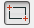
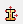
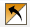

Modelagem de um edificio
Objetivo
Sabendo que o edificio abaixo será confeccionado em concreto C25 e com agregado basaltico, desta forma E = 33.6 GPa e v = 0.2 e que os pilares e vigas terão seção transversal de respectivamente 20x20cm e 20x60cm, determinar os esforços para dimensionamento dos elementos estruturais. Considerar uma carga de 10 kN/m² atuando em todas as lajes e que as alturas entre os pavimentos é de 3 m e os vão são de 6 m.
{kind=link}
Resolução utilizando o abaqus 6.12 student edition
O procedimento usual de resolução é demonstrado no seguinte fluxograma, cuja ordem pode eventualmente ser alterada por conveniência:

1. Pré-processamento
1.1. Início da análise
- Na caixa Start Session, selecione With Standard/Explicit Model.
- No Menu Model, clique com o botão direito em Model-1 e selecione Rename.
- Digite Edificio de 2 andares e clique em OK.
1.2. Criação da geometria base e definição do tipo de elemento
- No Menu Model, dê um duplo clique em Parts.
- No campo Name digite Vigas e Pilares.
- Em Modeling Space selecione 3D.
- Em Base Feature selecione Wire.
- Em Approximante Size digite 20 e clique em Continue...
{kind=link}
- Na Caixa de Ferramentas, selecione Create Lines: Connected.
- Na área de comando, desenhe a estrutura conforme abaixo.
- Desative a função Create Lines: Connected apertando a tecla Esc do teclado e clique em Done.
{kind=link}
- Clique no icone
- Clique em XY Plane, digite 6, tecle Enter e em seguida Esc.
{kind=link}
- Clique no icone e em seguida na linha criada na etapa anterior.
- Selecione horizontal and on the top e clique na barra horizontal superior do pórtico.
{kind=link}
- Digite as coordenadas (-3.0,-4.5), (-3.0,-1.5), (3.0,-1.5) e (3.0,-4.5).
{kind=link}
- Clique no icone , selecione as barras criadas anteriormente e clique em Done.
- Digite os valores na janela Linear Pattern conforme abaixo.

- Clique em OK e em seguida em Done.
{kind=link}
- Rotacione a estrutura com a ferramente Rotate View conforme abaixo, clique e segure o icone e selecione Create Wire: Point to Point.
{kind=link}
- Clique no icone
- Ligue os pontos conforme a imagem a seguir, marque Merge wire with part geometry e clique em OK.
{kind=link}
- No Menu Model, dê um duplo clique em Parts.
- No campo Name digite Lajes.
- Em Modeling Space selecione 3D.
- Em Base Feature selecione Shell.
- Em Approximante Size digite 20 e clique em Continue...
{kind=link}
- Na Caixa de Ferramentas, selecione Create Lines: Connected.
- Na área de comando, digite as coordenadas (1.5,0), (6,0), (6,6), (0,6), (0,1.5), (1.5,1.5) e (1.5,0).
- Desative a função Create Lines: Connected apertando a tecla Esc do teclado e clique em Done.
{kind=link}
- Repita o procedimento realizado para as Lajes para criar a Cobertura, clicando, porém, no icone  e digitando 0,0 e 6,6.
{kind=link}
1.3. Atribuição das propriedades dos materiais
- No Menu Model, dê um duplo clique em Materials.
- No campo Name digite Concreto C25.
- Na caixa Edit Material clique em Mechanical, selecione Elasticity e clique em Elastic.
- Em Young’s Modulus digite 33.6E9, em Poisson's Ratio digite 0.2 e clique em OK.
[![Figura 15.][15]][15]
1.4. Atribuição das propriedades e associação das seções
- No Menu Model, abra Parts (3) e em seguida Vigas e Pilares.
- Clique duas vezes em Section Assigments.
- Selecione os Pilares e clique em Done.
- Clique no icone no icone  na janela que será aberta.
{kind=link}
- Na janela Create Section digite Seção Pilares em Name, marque Beam em Category, selecione Beam em Type e clique em Continue...
{kind=link}
- Na janela Edit Beam Section clique no icone
 .
. - Na janela Create Profile digite Seção 20x20 em Name, selecione Rectangular e clique em Continue...
{kind=link}
- Na janela Edit Profile em a e b digite 0.2.
{kind=link}
- Cliquem OK nas tres janelas abertas e em seguida clique em Done.
- Repita o procedimento para as vigas, digitando Seção Vigas em Create Section, Seção 20x60 em Create Profile e 0.2 em a e 0.6 em b na janela Edit Profile.
{kind=link}
- No Menu Model, abra agora Parts (3) e em seguida Cobertura.
- Clique duas vezes em Section Assigments.
- Selecione a Laje da cobertura e clique em Done.
- Clique no icone no icone na janela que será aberta.
{kind=link}
- Na janela Create Section digite Seção Lajes em Name, marque Shell em Category, selecione Homogeneous em Type e clique em Continue...
{kind=link}
- Na janela Edit Section digite 0.12 em value e clique em OK.
{kind=link}
- Na janela Edit Section Assignment altere Midle Surface para Bottom surface em Definition e clique em OK.
{kind=link}
- Repita o procedimento para Lajes.
{kind=link}
- No Menu Model, abra Assembly e dê um duplo clique em Instances.
- Certifique-se que está selecionado Dependent (mesh on part) em Instance Type, Selecione Cobertura, Lajes e Vigas e Pilares clique em OK.
{kind=link}
- Utilizando as ferramentas Translate Instance e Rotate Instance, posicione a laje e a cobertura conforme a imagem a seguir.
{kind=link}
- Clique novamente em Instance, mas selecionando desta vez apenas Lajes e clique em OK.
{kind=link}
- Posicione a laje, utilizando das mesmas ferramentas ja citadas, conforme a imagem a seguir.
{kind=link}
- De um duplo clique em Constraints, selecione Tie e clique em Continue...
- Clique em Node Region e em seguida no icone .
- Selecione as lajes e clique em Done duas vezes.
{kind=link}
- Selecione as vigas e clique em Done.
{kind=link}
- Clique novamente em Node Region e em seguida no icone .
- Selecione as arestas das lajes conforme indicado, clique em Done e na janela que ira se abrir clique em OK.
{kind=link}
- Clique no icone .
1.5. Aplicação das condições de contorno
1.5.1 Cargas
- No Menu Model, dê um duplo clique em Steps (1) e clique Continue...
- Em Edit Step clique em OK.
- No Menu Model, dê um duplo clique em Loads.
- No campo Name digite Carga 10 kN/m2,selecione Pressure e clique em Continue...
{kind=link}
- Selecione todas as lajes, clique em Done e em seguida em Brown.
{kind=link}
- Em Edit Load digite 10E3 no campo Magnitude e clique em OK.
{kind=link}
1.5.2 Apoios
- No Menu Model, dê um duplo clique em BCs.
- No campo Name digite Apoio Engastado.
- Em Step selecione Initial.
- Selecione os pontos conforme a imagem a seguir e clique em Done.
- Na janela Edit Boundary Condition selecione ENCASTRE(U1 = U2 = U3 = UR1 = UR2 = UR3 = 0) e clique em OK.
{kind=link}
1.6. Criação da malha
- Em Module selecione Mesh.
{kind=link}
- Na Barra de Contexto, em Object, selecione Part.
- Certifique-se que esta selecionado Lajes e no Menu Principal clique em Mesh e posteriormente em Element Type.
- Selecione a laje e clique em Done.
- Na janela Element Type selecione Shell em Family.
- Em Geometric Order selecione Quadratic.
- Clique em OK e em seguida em Done.
{kind=link}
- No Menu Principal, clique em Seed e posteriormente em Part.
- Em Approximate Global Size digite 0.5, clique em OK e em seguida Done.
- No Menu Principal, clique em Mesh e posteriormente em Part.
- Aparecerá a pergunta "OK to mesh the part?", clique Yes.
- Repita o procedimento para a Cobertura.
{kind=link}
- E repita, por fim para, Vigas e Pilares, este com aproximate global size de 1.
{kind=link}
1.7. Definição das variáveis de saída
- No Menu Model, abra Field Output Requests (1) e dê um duplo clique em F-Output-1.
- Marque RF, Reaction forces and moments.
- Em seguida, clique em OK.
1.8 Direção das vigas
- Em Module, selecione Propertyes
{kind=link}
- Certifique-se que esta selecionado Vigas e Pilares em Part e clique no icone

- Selecione as vigas conforme indicado e clique em Done, aperte Enter e em seguida clique em OK
{kind=link}
- Repita o procedimentopara as outras barras, digitado 1,0,0 para a direção do vetor. Ao final clique em Done.
{kind=link}
2. Processamento
- No Menu Model, dê um duplo clique em Jobs.
- Na janela Create Job clique em Continue...
- Na janela Edit Job clique em OK.
- Abra Jobs e clique com o botão direito em Job-1 e clique em Submit.
- Se aparecer uma janela dizendo “Job files already exist for Job-1. OK to overwrite?”, clique OK.
- Aguarde o processamento dos dados, que estará concluído quando aparecer (Completed) ao lado de Job-1 no Menu Model.
3. Pós-processamento
3.1. Análise gráfica
- No Menu Model, clique com o botão direito em Job-1(Completed) e clique em Results.
- Na Caixa de Ferramentas, clique em Plot Deformed Shape.
- Clique em View e em seguida OBD Display Options.
- Marque Render Beam Profiles e Render Shell Thickness e clique em OK.
{kind=link}
- E agora, consegue dimensionar o edificio? Qual esforços voce utilizaria? Seria possivel simplificar mais ainda a analise e obter resultados ainda satisfatorios? Melhor ainda...os resultados são...REPRESENTATIVOS?